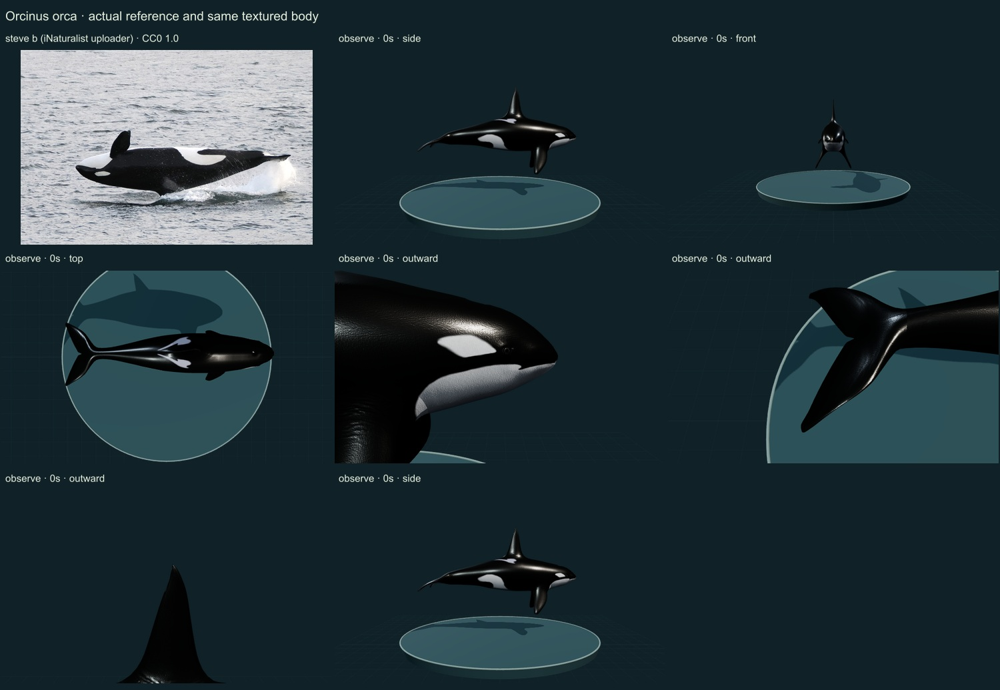
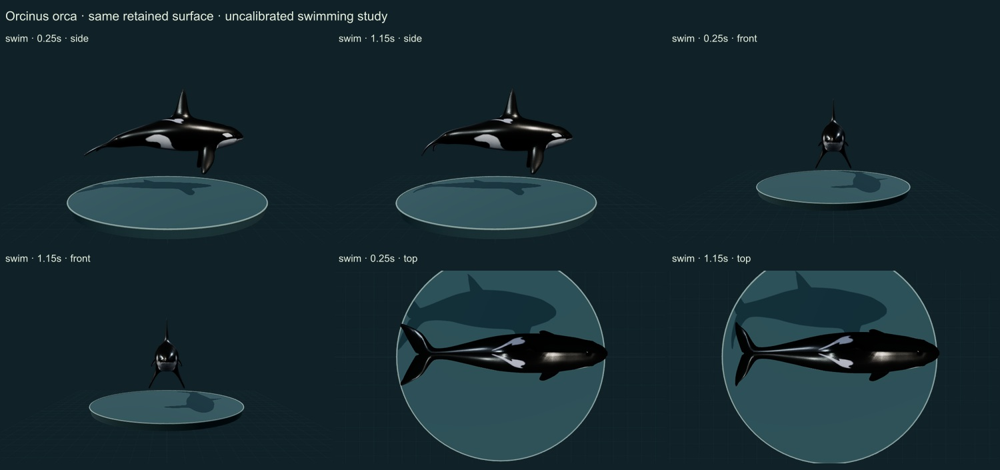

RELEASE 0.6.28 · INITIAL STUDY · 25 OCTOBER 2026
Killer whale (orca)
Orcinus orca
13 actual final rendered states and two credited sheets inspected. This is an automated editorial comparison, without independent specialist review, measured geometry, validated biomechanics or an accuracy percentage.
Body
Rounded cetacean body, contrasting ventrum/eye patches, dorsal fin and horizontal flukes are distinct from both sharks. Head profile, flipper breadth, sex, age and ecotype remain insufficiently established from the creator asset. The reference is a different individual and source-labelled Bigg’s form.
Surface
Continuous retained atlas and source normal detail; no skin-patch collage or schematic substitution. Strong highlights and fine skin pattern remain artist interpretations. Wet-skin optics are not quantitatively calibrated.
Movement
Vertical posterior deformation inspected at 0.25 and 1.15 display seconds from side/front/top. The anterior body remains comparatively stable and the same UV surface resets. Independent pectoral-flipper phasing, propulsion, speed, muscle action, breathing and sleep are absent.
Changes
- Original credited artist body and embedded textures bundled.
- Authored continuous posterior bending in a vertical plane; no body-size scaling.
- Aquatic display clearance and broader anatomy framing; surface-linked approximate landmarks.
- Explicit NOAA/SMM versus MDD taxonomic-concept warning; occurrence map withheld.
Actual comparison screenshots
Side, front and top views; two swimming phases at 0.25 and 1.15 display seconds; three approximate outward anatomy foci; Observe reset. Detail views show selected regions, not complete orthogonal anatomy. The photograph shows a different individual.


Remaining limitations
- Head and pectoral-fin proportions need specialist comparison to identified sex/age/ecotype.
- Body dimensions and source texture are not measured from an animal.
- Full population-specific foraging, sound production, physiological sleep and hydrodynamics remain unavailable.
Society for Marine Mammalogy/NOAA currently retain the eastern North Pacific resident and Bigg’s forms provisionally within Orcinus orca, whereas MDD v2.5 lists O. ater and O. rectipinnus as species. This single broad O. orca record is not a determination of the creator model’s ecotype and must not be added to separate split taxa without concept reconciliation. Global GBIF occurrence association is withheld.
Original-resolution URL derived from the source photo URL; original retrieval timed out. The actual downloaded source is the openly licensed large derivative at downloadUrl; downloadSha256 covers that exact derivative, not inaccessible original-resolution bytes.
Source and access scope
- NOAA Fisheries killer-whale species account — Selected morphology, ecological and behavioral account read; not a Smithsonian collection determination or calibrated model validation.
- GBIF accepted species-level linkage — Exact accepted species-rank linkage; not a determination of the artist mesh or photograph.
- Fish et al. (2003): stabilization by phased movements in swimming odontocetes — Published abstract read: seven odontocetes including O. orca; qualitative posterior/vertical swimming context. The animation is not fitted to its measurements.
- Licensed authentic organism reference — The photographed animal is source-labelled as the Bigg’s form. Used only under the explicitly disclosed broad NOAA/SMM O. orca treatment. Creator model is not identified to ecotype.
- Orca by Chicy3 — Credited CC BY 4.0 artist mesh, retrieved without sign-in through the Objaverse archive. Artist title is not independent biological identification.
- NOAA update: provisional killer-whale subspecies and taxonomic disagreement — June 2025 addendum actually read; contrasts with MDD v2.5. Single broad concept retained; no separate ecotype addition.
- ASM Mammal Diversity Database v2.5: O. orca — Official v2.5 species table and taxonomic notes read. MDD lists O. ater and O. rectipinnus separately; its narrower O. orca concept is not used to assign this artist or photo.
Machine-readable evidence, grants and checksums · Open the same specimen · Release review